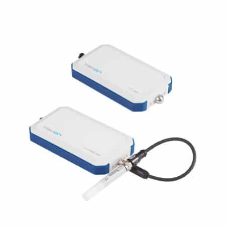
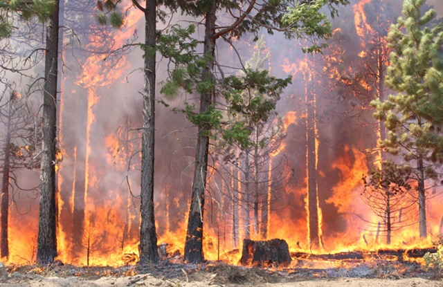
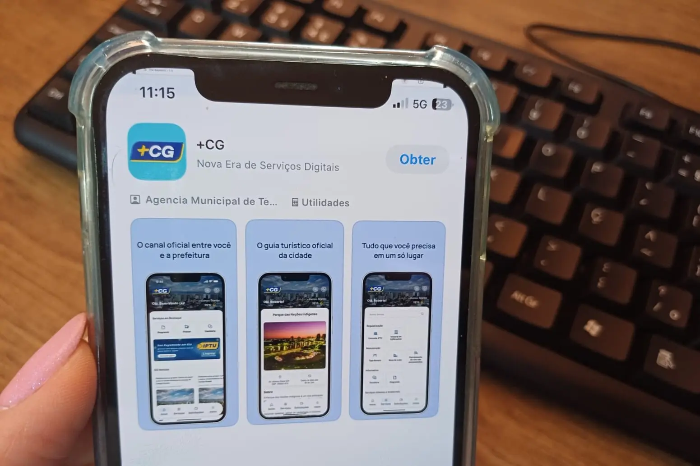
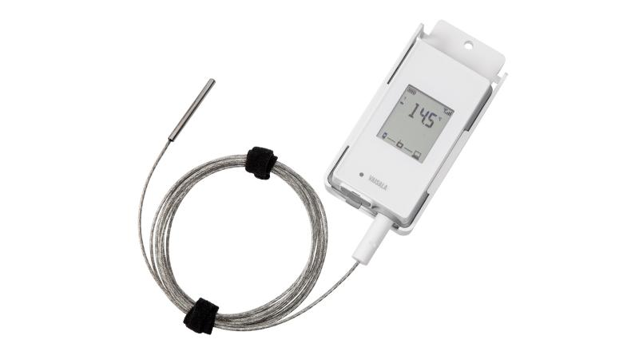
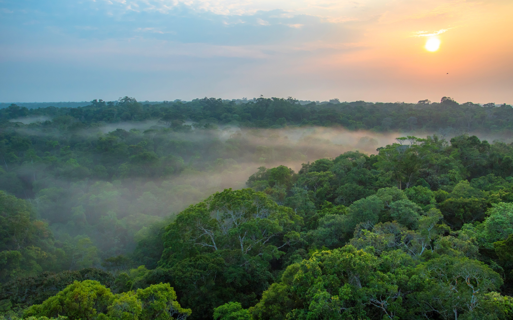

Sistema de sensores para prevenção de incêndios florestais, monitorando temperatura, umidade e fumaça.
Explore!
FireSense, é um sistema de sensores instalado em áreas de risco de incêndios florestais.
Os sensores monitoram continuamente a temperatura, umidade do ar e presença de fumaça.
Um aplicativo, no qual os moradores locais poderiam ver os sensores na sua área, vendo se tem algo suspeito, e denunciarem caso notem algo suspeito.

Os sensores ficam instalados em áreas de risco e medem a temperatura, umidade e fumaça continuamente.
Os dados são enviados para o sistema, que verifica se as coisas estão dentro do esperado.
Se a temperatura, umidade e/ ou fumaça indicarem uma possível situação de incêndio, o sistema identifica o risco.

O aplicativo informa os moradores ou responsáveis pela região, que podem verificar a situação e tomar providências.
A ideia do projeto surgiu ao vermos com frequência notícias sobre incêndios florestais nos jornais. Isso nos fez pensar em como a tecnologia poderia ajudar na prevenção e na identificação de possíveis focos de incêndio.
A partir disso, nosso grupo desenvolveu a ideia de um sistema de sensores que monitora temperatura, umidade e fumaça em áreas de risco, buscando contribuir para a identificação antecipada de situações perigosas.

O aplicativo FireSense recebe os dados dos sensores e organiza tudo em tabelas de status fáceis de ler. Assim, qualquer anomalia na região é destacada imediatamente para os usuários.
| Área (Sensor) | Status | Temp. |
|---|---|---|
| Setor Norte | Normal | 24°C |
| Setor Leste | Normal | 26°C |
| Setor Sul | Em Alerta | 39°C |
